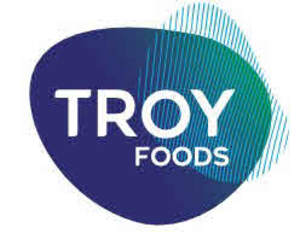

Trade Mark Journal No.2025/050 12 December 2025
UK00004302748 28 November 2025 (29,30,35,39,40,42)

- Class 29
- Cooked, prepared, processed, preserved or frozen fruits or vegetables; prepared meals; prepared fruits and vegetables; preserved fruits and vegetables; ready meals; frozen prepared meals; frozen ready meals; vegetarian ready meals; vegetarian frozen foods; snacks; snack foods; prepared foods; prepared dishes consisting primarily of vegetables; prepared vegetable packs for stew; ready-to-cook vegetable packs; processed ready-to-cook vegetable packs consisting of broccoli, Brussel sprouts, potatoes, Mediterranean vegetables or seasonal vegetables; ready-to-cook potato wedges; ready-to-cook cauliflower cheese; preserved, dried and cooked fruits and vegetables; prepared salads; potato salad; beetroot salad; prepared salads consisting of mixtures of grains, cereals, seeds, beans and nuts, eggs, milk products, edible oils and fats; grains, cereals, seeds, beans and nuts, eggs, edible oils and fats, all in the form of salads or for use in salads; coleslaw; carrot sticks; meat, fish, poultry and game; prepared foods including meat, fish, poultry and game.
- Class 30
- Snacks; snack foods, none consisting solely of cheese or dairy products; prepared meals; ready meals; frozen prepared meals; frozen ready meals; savoury products; savoury products consisting of or containing vegetables in the form of pies, tarts, tortillas or pastries; savoury products consisting of or containing relish, chutney and/or other sauce based condiments; pasta-based prepared foods; pasta salad; couscous-based prepared foods; couscous salad; quinoa-based prepared foods; quinoa salad; edamame beans-based prepared foods; edamame beans salad; rice-based prepared foods; rice salad; bulgur wheat-based prepared foods; bulgur wheat salad; cereals; noodle-based foods; preparations made from cereals; prepared sandwiches; prepared sandwich fillings; flavourings; seasonings; chutney; preserves; dressings; salad dressing; croutons; relish; mayonnaise; savoury sauces; pesto; condiments; tomato ketchup; savoury dips; mayonnaise and ketchup based spreads; prepared foods, prepared meals, ready meals, snacks and meals from any of the above goods.
- Class 35
- Business analysis and information services; market research; Product marketing; Business marketing services; Business advisory services relating to product development; Business consultancy services relating to product development; Product merchandising; Product launch services; Product demonstrations and product display services; Retail services relating to food; Product sampling.
- Class 39
- Packaging of food; Transportation of food; Storage of food; Delivery of food and drink prepared for consumption.
- Class 40
- Food and drink preservation; food processing; food canning; pasteurisation services for food and beverages; food smoking; food and beverage treatment; Processing of foodstuffs for use in manufacture.
- Class 42
- Product research and development; food research; Evaluation of product development; Design and testing for new product development; Product quality control testing.
Troy Foods (Salads) Limited
Representative: Walker Morris LLP